● HTTP
Automatic via the Ktor plugin — method, status, headers, JSON bodies,
TTFB/download waterfall. Secrets redacted at capture; streams never consumed.
install(SharinganKtor)
kotlin multiplatform · ios & android
Sharingan is an on-device debug logger for HTTP, MQTT and Bluetooth. It captures protocol traffic while you use your app, browses it in a built-in terminal-density UI — and exports clean, structured logs made to hand to an AI agent.
one buffer, three protocols
A token refresh fails over HTTP, the device misses its MQTT command, the peripheral notifies garbage over GATT. Sharingan puts all three timelines in one place, in capture order.
Automatic via the Ktor plugin — method, status, headers, JSON bodies,
TTFB/download waterfall. Secrets redacted at capture; streams never consumed.
install(SharinganKtor)
Client-agnostic, one line per callback. Publish, receive, subscribe — with QoS and retain flags rendered as badges, broker failures on the failure rail.
Sharingan.mqtt.received(topic, payload, qos = 1)
GATT connect, discover, read, write, notify — log decoded values and they render as syntax-colored JSON. Works with Kable or any client.
Sharingan.ble.notify(device, char, uuid, value)
the differentiator
Every other network inspector formats for human eyeballs. Sharingan's share sheet leads with Copy for AI agent — structured Markdown an LLM parses reliably. Reproducing a bug becomes: tap, paste, fixed.
## HTTP 500 — GET /v1/streams/cam-12
host: api.iot-fleet.dev
duration: 10 214 ms (TTFB 10 180 · download 34)
request:
Authorization: ••••
Accept: application/json
response body:
```json
{ "error": "upstream_timeout",
"stream": "cam-12", "retry_after": 30 }
``````json blocks — no OCR-style guessing for the model.SharinganExport.agentMarkdown(events), curl(event), sessionJson(events).AGENTS.md / llms.txt for a machine-readable API reference.ship with confidence
The sharingan-noop artifact mirrors the public API and does
nothing — no UI, no capture, no notification, no resources. Your release APK doesn't
carry a debug tool; it carries an interface.
dependencies {
debugImplementation("io.github.mibrahimdev:sharingan:0.1.0")
releaseImplementation("io.github.mibrahimdev:sharingan-noop:0.1.0")
}On Maven Central — add mavenCentral() and you're set (Getting started → Get the artifacts). Zero init code on Android — capture starts via a manifest-merged
ContentProvider. KMP/iOS setup is one Gradle property.
on device · ios & android
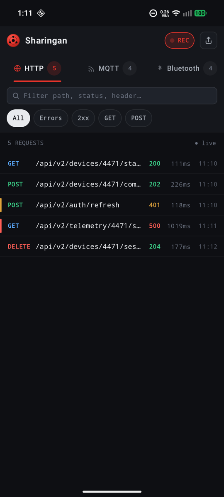
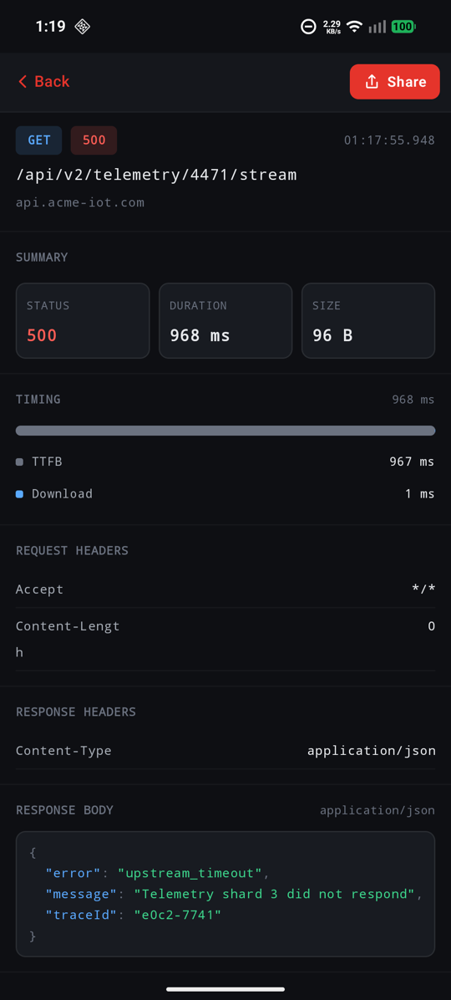
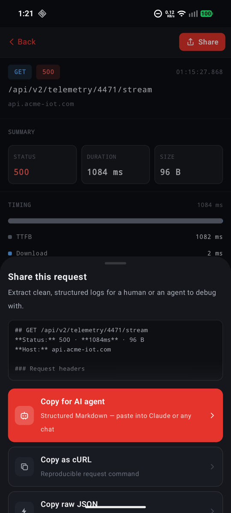
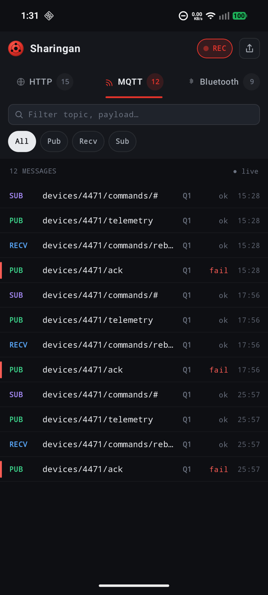
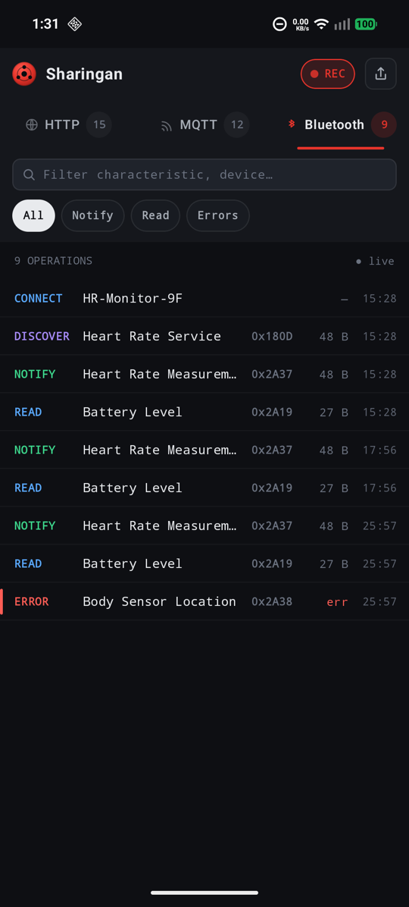
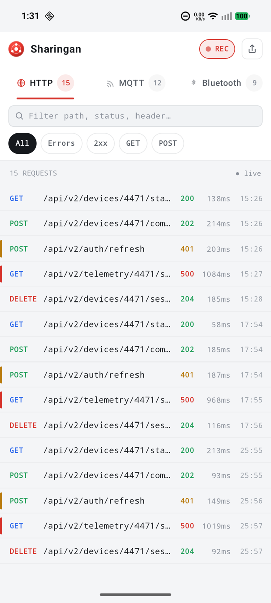
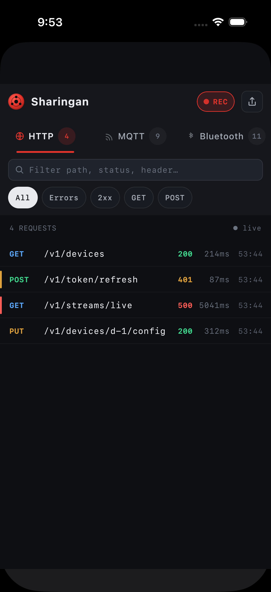
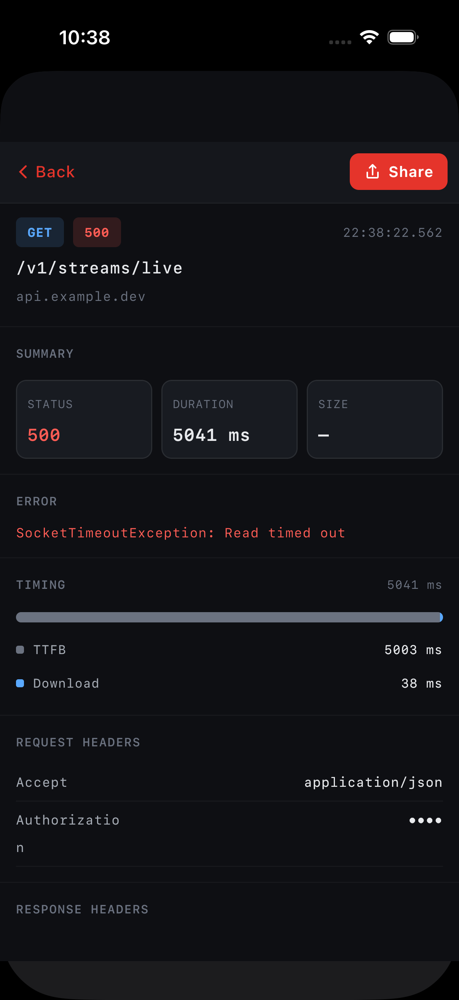
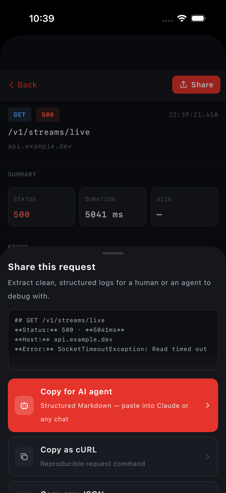
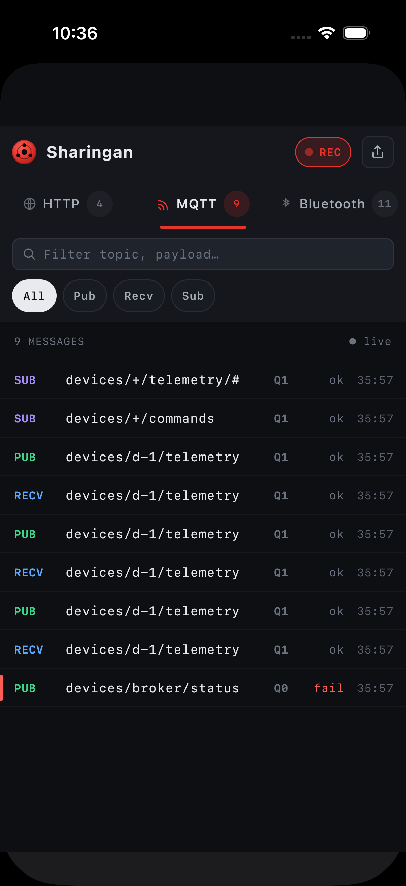
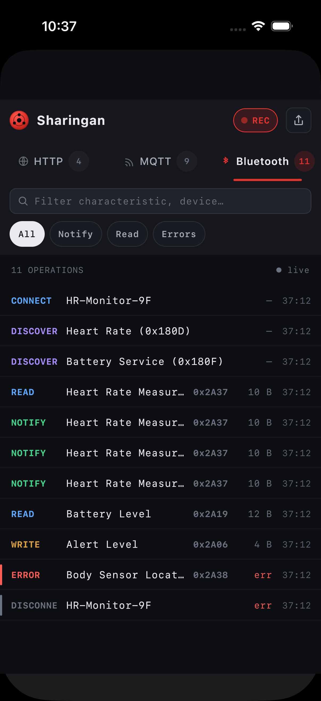
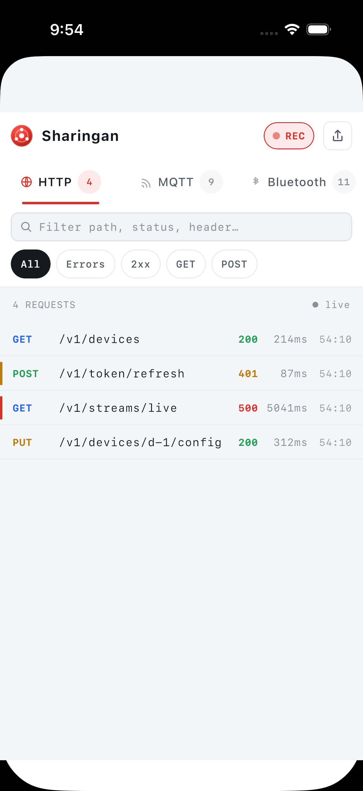
sixty seconds
Add the two Gradle lines.debugImplementation + noop.
install(SharinganKtor) in your HttpClient. MQTT/BLE: one line per callback.
Use your app. Tap the capture notification — or present the log browser via Sharingan.show(context) / SharinganViewControllerKt.presentSharingan(animated:).